These screenshots show the combined Polish and Additions implementation, using disposable chats, projects, documents and prompts in isolated worktrees. Chrome captures and repeatable Chromium test artifacts are unedited. Nuxt development controls are visible in some images.
Remaining visual coveragePlugin setup/Marketplace, workspace backup, Marketplace library, webhook/admin configuration, unavailable-app and tool-status states have source review and relevant component coverage, but no fresh screenshot proof in this gallery. Protected-screen captures are pending explicit approval for a disposable mock signed-in session. This gallery is not an accessibility conformance certification.
Phone composer, 320 px
After selecting GPT-4o mini: compact input, no selection toast or generic workspace label.
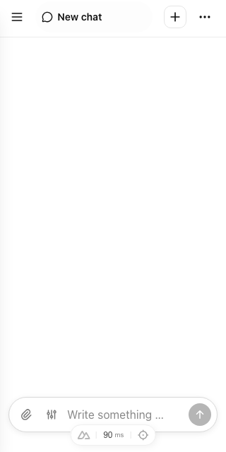
Phone chat settings
Current model and model catalog remain in Settings.
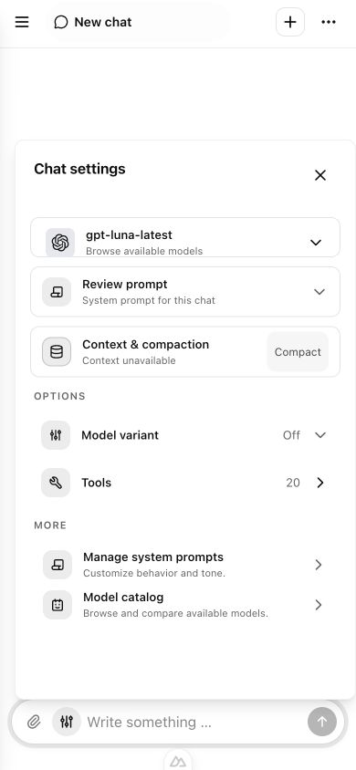
Phone model catalog
Single capability-filter row; named search and sort controls. Disposable model fixture.
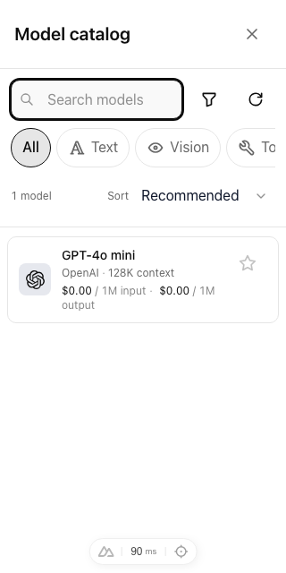
Desktop chat and sidebar
Compact composer, title filtering, navigation controls and distinct drafts.
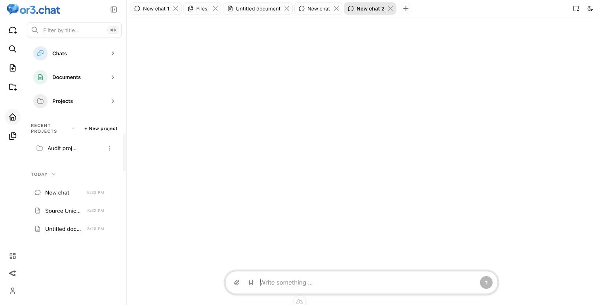
Drafts after reload
Browser regression retains independent unsent drafts with numbered tabs.
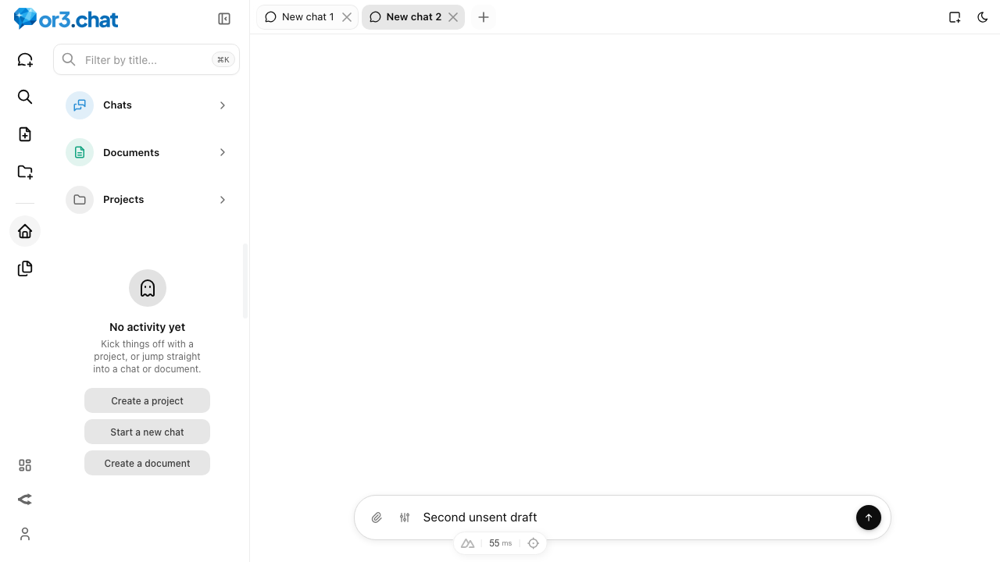
Project chat
The project stays selected while the input has no project or prompt badges.
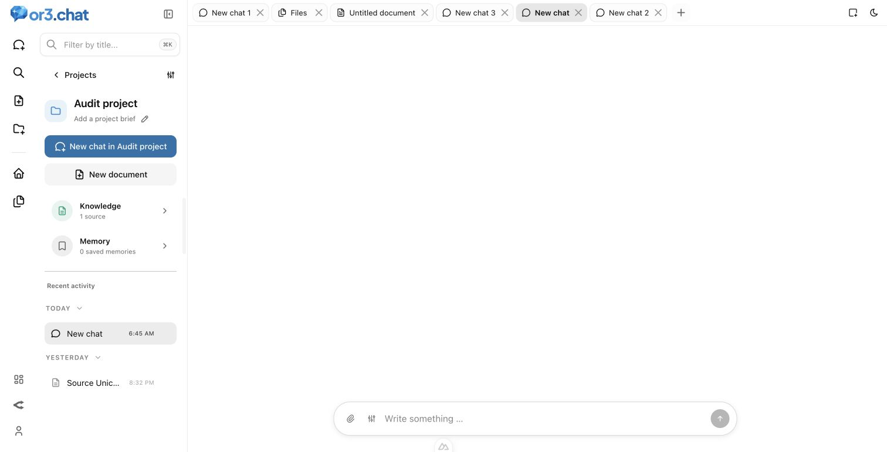
Project knowledge
Long Unicode source title wraps without colliding with Preview.
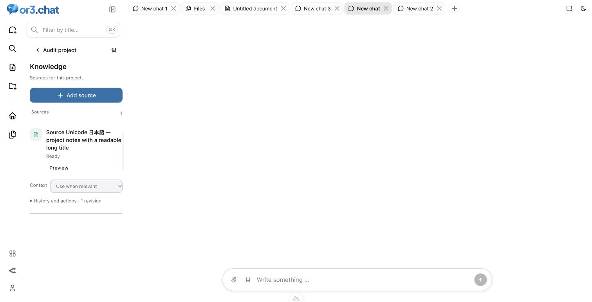
Dashboard settings
Back returns to Dashboard; no repeated title in the breadcrumb.
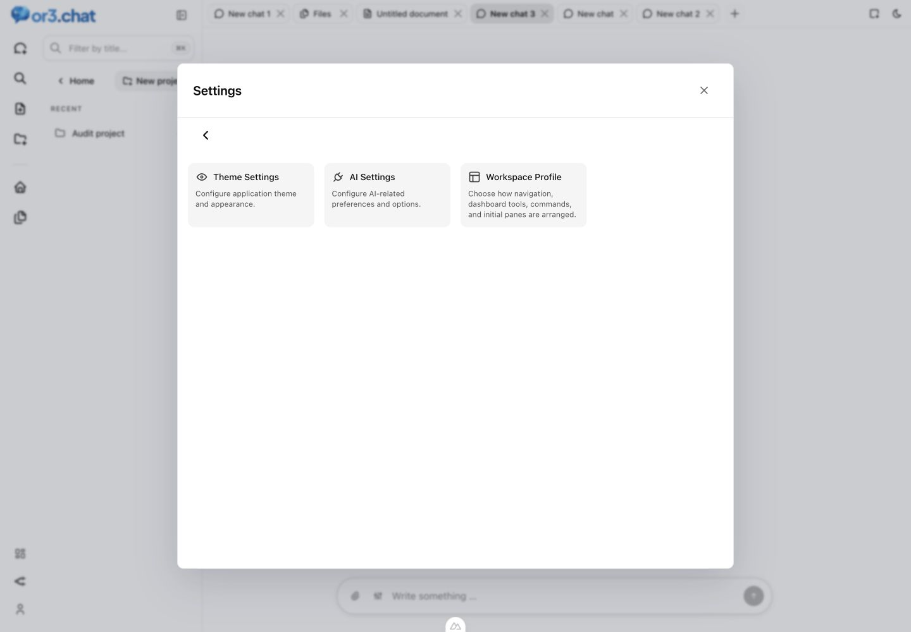
AI settings
One page title; automatic and explicit save behavior remain beside their controls.
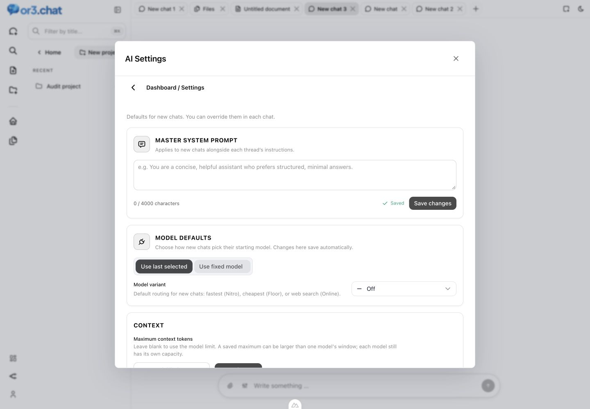
Theme settings
Removed repeated theme heading and introductory filler.
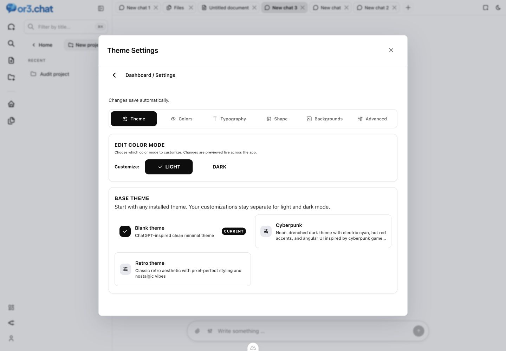
Files
Visible Trash destination and accessible file actions.
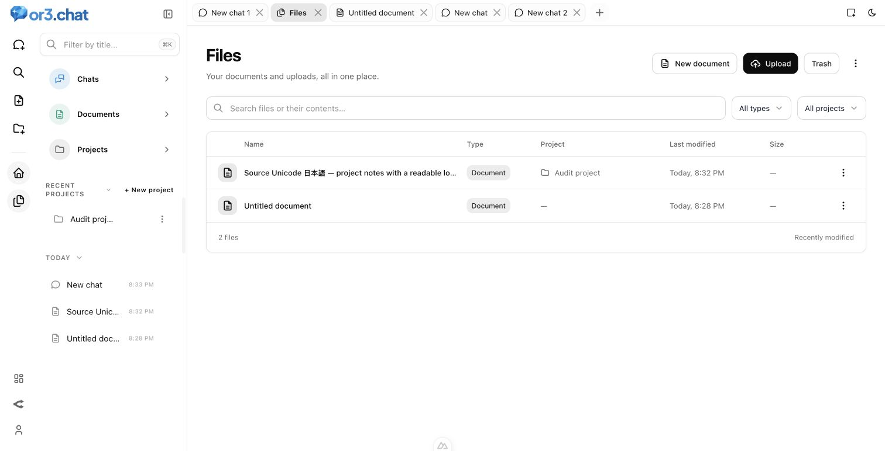
File trash
Visible exit; no upload or creation controls in Trash.
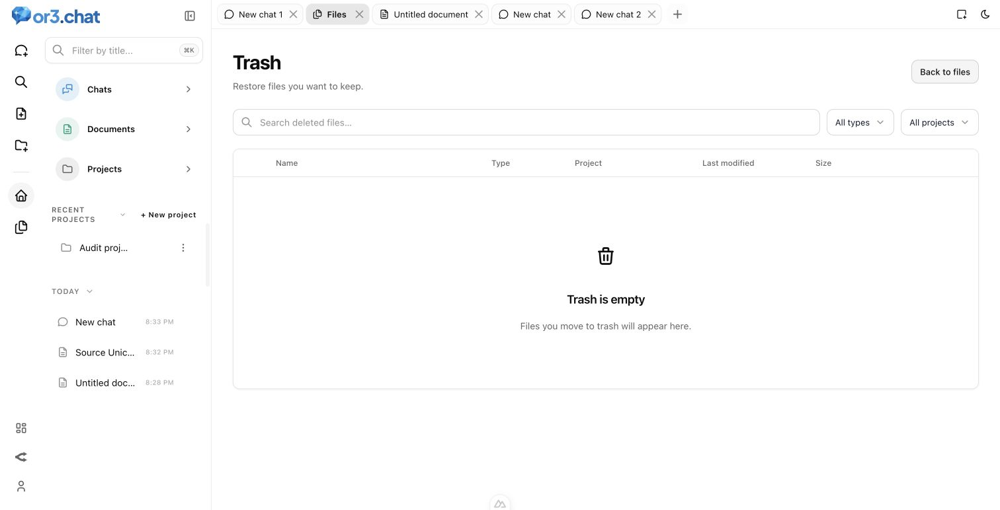
Document outline
Removed repeated outline heading and instructions.
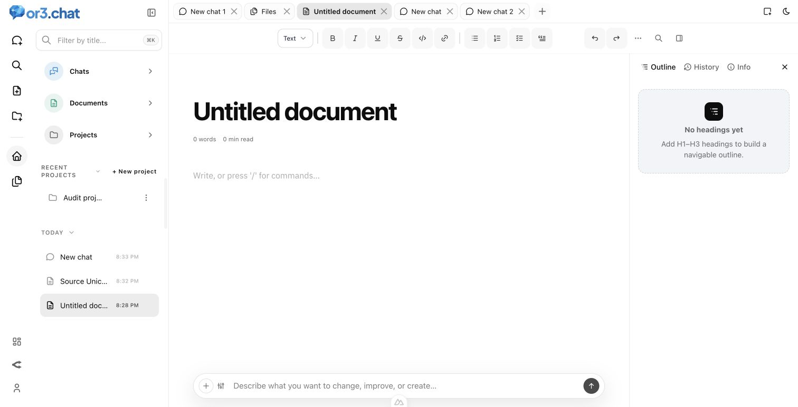
Document info
Readable statistics without the extra insights introduction.
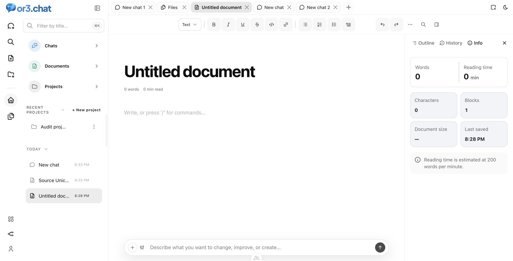
Document history
Saved versions and meaningful empty-state guidance.
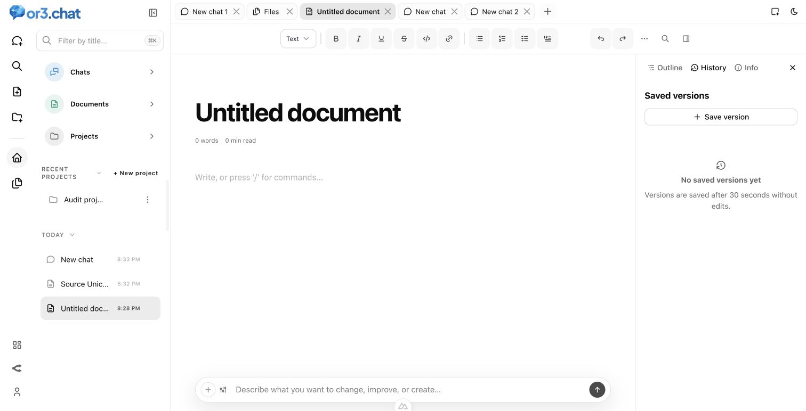
Phone document history
Settled mobile inspector layout with readable text and controls.
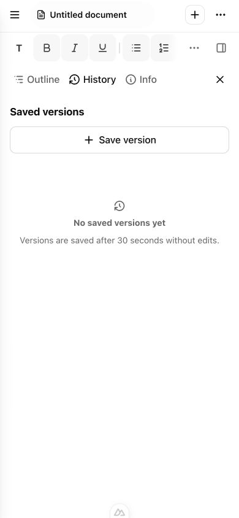
Empty system prompt library
One creation action in the empty state.
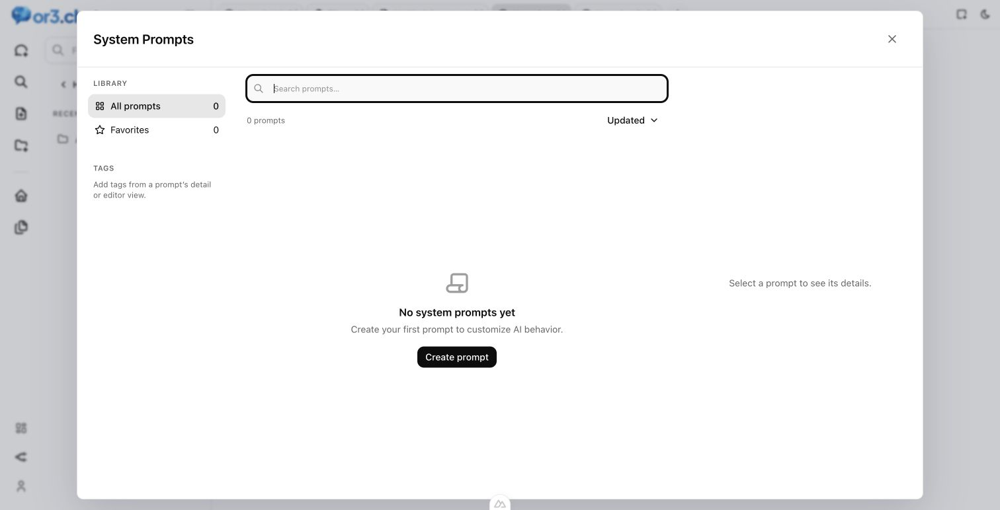
Prompt editor after reload
Named title and instructions; saved content survives reopening.
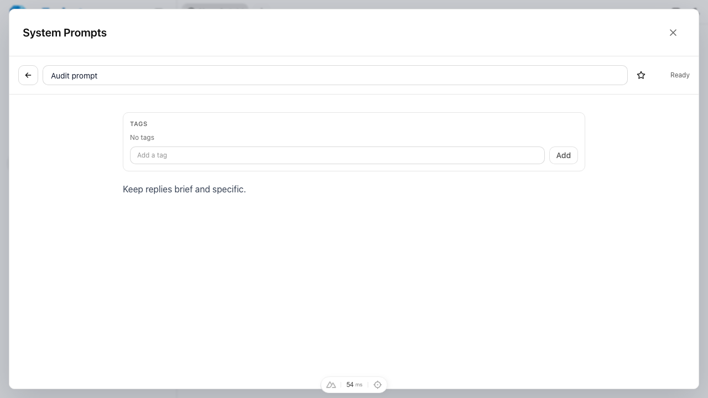
Activity, Failed filter
Readable statuses and an empty state specific to the selected filter.
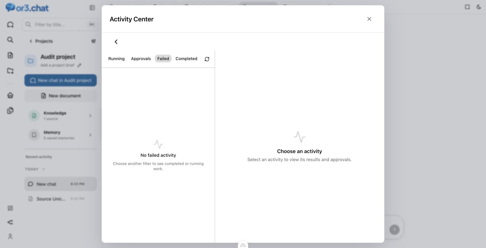
Image library
Removed the generic workspace eyebrow and preview implementation note.
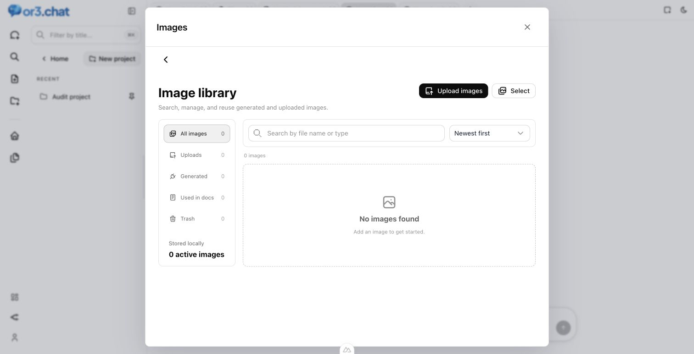